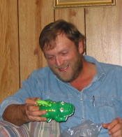
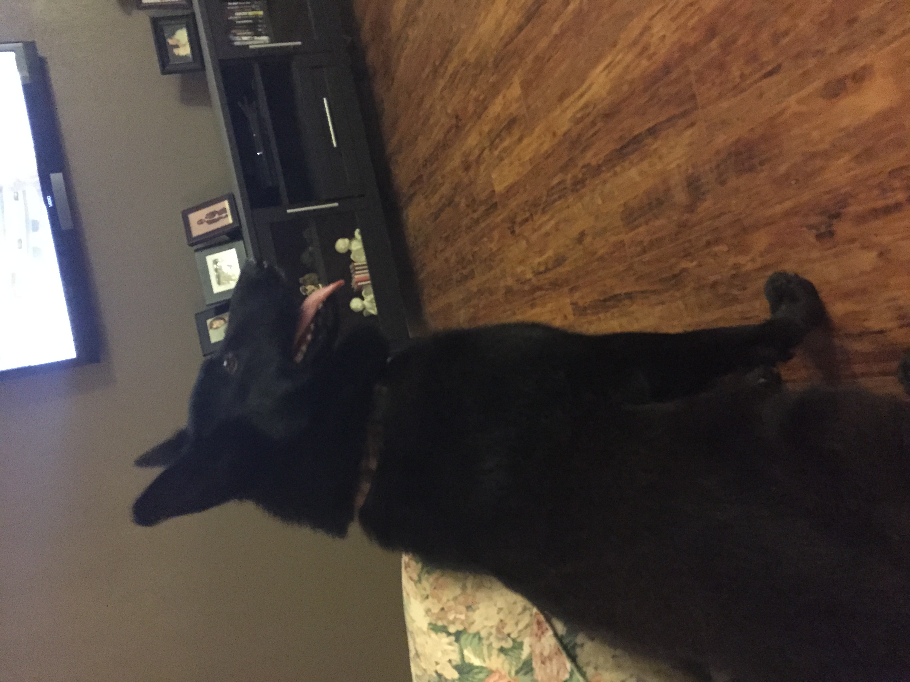
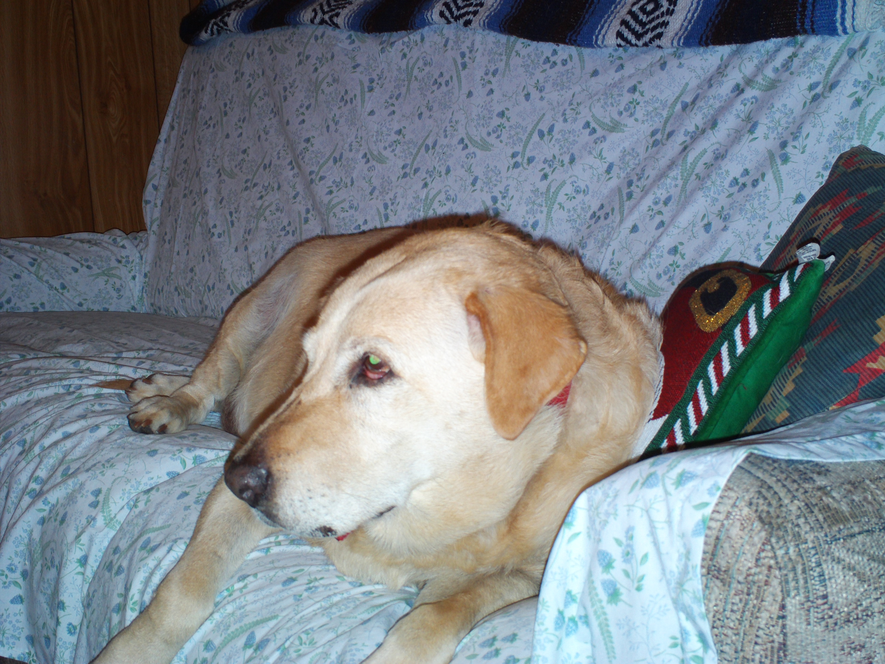
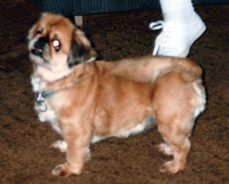
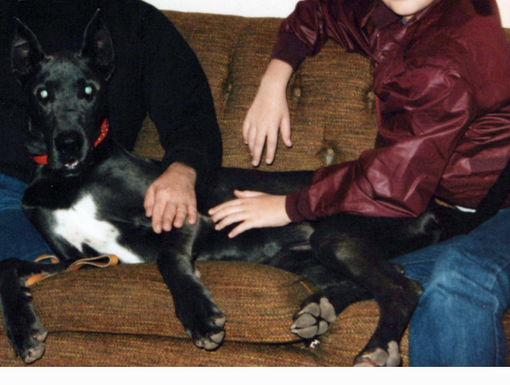
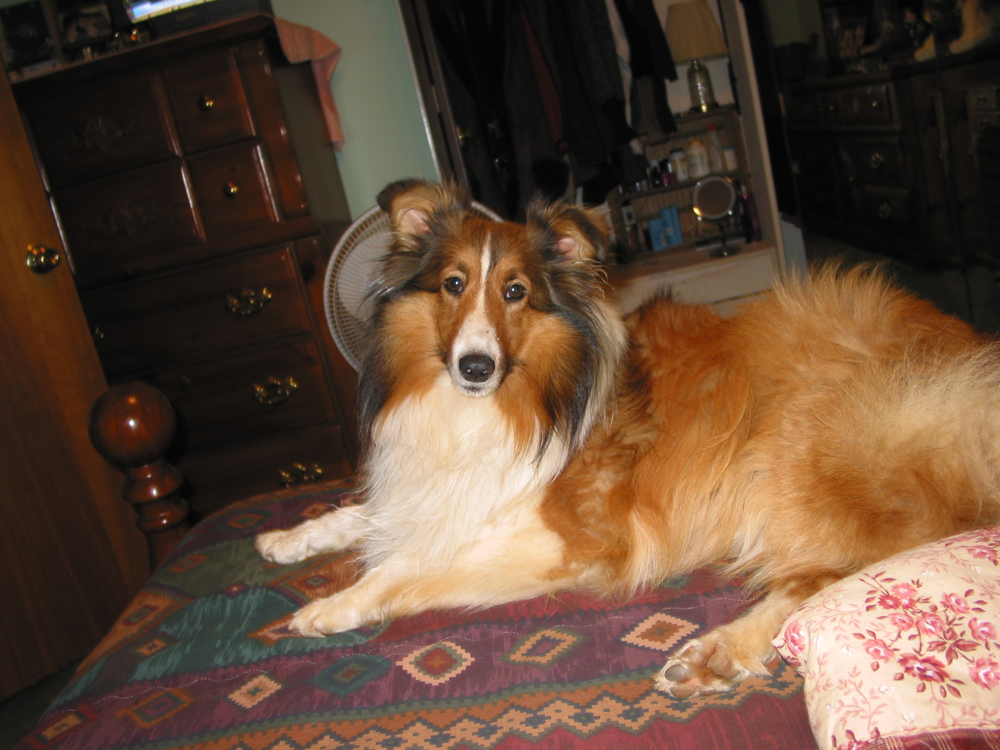

Dick Bell
Born: May 27, 1922Died: June 23, 2011Age at death: 89
Buster’s brother
Click here to view 14 archive itemsChoose a family member to open their personal page of photographs, documents, and memories.





A place for aunts, uncles, cousins, and other relatives connected to the Bell family story.
Buster’s brother
Click here to view 14 archive itemsAlma’s sister
Click here to view 12 archive itemsEverate & Peggy’s daughter
Click here to view 3 archive itemsLisa’s daughter
Click here to view 7 archive itemsDonna Brown’s brother
Click here to view 5 archive itemsA place for close friends whose lives and memories are woven into the family archive.
Rickey’s oldest friend
Click here to view 5 archive itemsStephanie’s oldest friend
Click here to view 10 archive itemsAndrew’s wife
A place to remember the animals who have been loved as part of the family.
Aria wandered up to Confederate Avenue.
Her family nickname is “Crack Head” because she is always wildly energetic, as if she is on meth.
Found at the Confederate home while running from a cat that had attacked her.
Although timid around cats, Lady thinks she is a guard dog.
Debbie’s dog, bought from a breeder.
Gabby was exceedingly loving and scared of everything. She did not have the usual Chihuahua attitude.

Obtained at Derrick Joyner’s home after the homeowner died.
Midnight had been kept in an 8-by-8 kennel and used only for breeding.

Purchased at a pet store.
She became overweight after being spayed. You could not keep her away from water—she would swim out forever, then come back.

Bought from a breeder.
Patsy was gentle until someone said, “Give me that bone,” and then she became an unleashed tiger. Randy Snipes used to tease her over a bone, and she drew blood many times.

Found in High Point, North Carolina.
No one believes that she jumped over Rickey’s head while he was standing upright at about 10 years old, but Dickey witnessed it! She went missing around 1990.

Blaze was Dad and Sonja’s dog.
Remembering first responders whose service and lives remain part of the family archive.
During paramedic school, Will was nicknamed “Camel Jockey” after sharing a photograph of himself riding a donkey in Iraq while wearing a full combat loadout.
Many people who knew Tammy have questioned the official finding surrounding her death.
Jason had his demons to fight, but he was a gentle giant, and his son, J Jr., was his world.
Click here to view 27 archive itemsThis family tree is the starting point. As more relatives are added, each person can have their own page and can be linked to multiple photographs, documents, stories, places, and events.